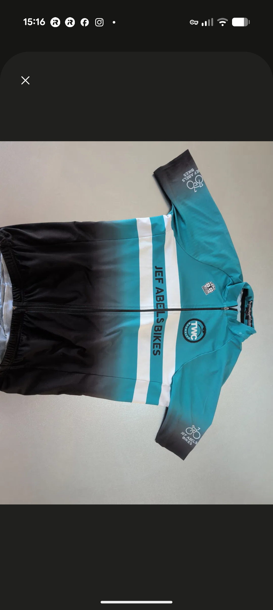
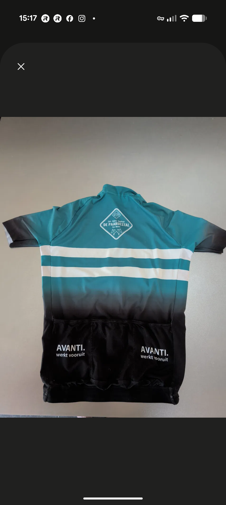

Zuid-Limburg · Sinds 1977
Over ons
"Elke zondag 09:30. A, B en C-groep. 65–70 km door het Limburgse heuvelland. Sinds 1977. ~45 leden. Eén passie."
Route van de week
Route wordt geladen…
–
Route update elke week · GPX download beschikbaar


Klik om te draaien
Het shirt
Elk lid rijdt in het clubtenue van TWC Mechelen. Ontworpen voor de cols van Zuid-Limburg. Zichtbaar in de pelotons van de Amstel, de Ardennen en de lokale kermiskoersen.